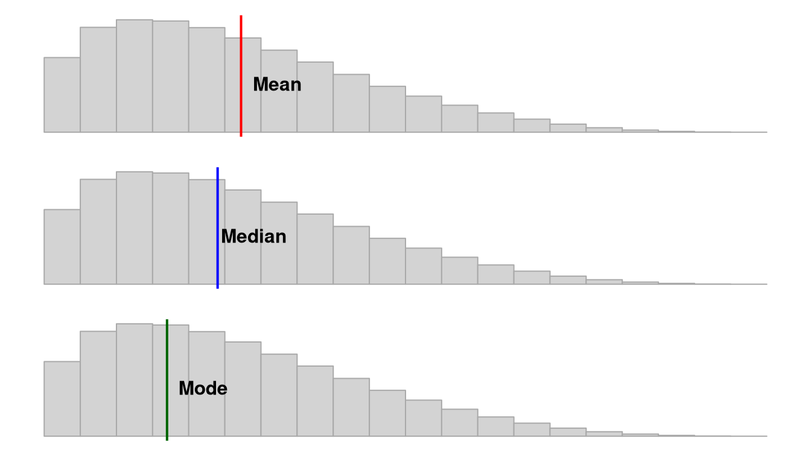

2. Statistics foundations
You have learned about both quantitative and qualitative methods. We will be focusing primarily on quantitative methods in this class and in this textbook. By quantitative methods, I mean methods that predominantly collect data that deals with numbers. We can then analyze that data using statistical procedures, which we will shorthand to “statistics.” Understanding what we mean by statistics is the purpose of this chapter.
Describing Our Data
First, let’s understand some basic statistics related to how we describe our data, including measures of central tendency (averages), measures of dispersion (spread), measures of shape of the distribution,
Measures of Central Tendency
There are multiple measures of central tendency (these are all averages so you must be careful when you say that word to explain which type you mean!):
Mean: the sum of all points divided by the total number of points; susceptible to outliers
Median: the middlemost value; less susceptible to outliers and best used when the data is skewed
Mode: most frequent score. Our data can also be multimodal when there are multiple modes or bimodal when there are two modes.
Note that depending on the shape of the distribution, the mean, median, and mode may not be the same value. If we have a normal distribution then they will be the exact same! However, if we have a positively skewed distribution, the mean and median will be pulled towards the positively skewed data, as shown in this figure by Peter Prevos.

Measures of Dispersion
There are also multiple measures of dispersion that describe the spread of our data:
Range: the difference between the maximum and minimum value (e.g., if the minimum score is 17 and the maximum is 49, then the range is 32)
Quartile: when a dataset is divided into four equal parts, the first quartile (Q1) is at the 25th percentile, the second quartile (Q2) is at the 50th percentile, and the third quartile (Q3) is at the 75th percentile. Note that the median is also the 50th percentile!
- Interquartile range: the middle 50% (Q1 to Q3)
{kind=link}
Variance: the sum of the squared deviations from the mean. This means first (a) calculating the mean, (b) subtracting each score from the mean (aka deviations from the mean), (c) squaring each of those deviations values, and (d) summing all those squared deviations. This is represented by the equation \(\frac{\sum (X-\mu)^2}{N}\)
Standard deviation: is the square of the variance. This is represented by the equation \(\sqrt{\frac{\sum (X-\mu)^2}{N}}\) however that equation is only used if we are examining the whole population. If we only have a sample, we replace the denominator
NwithN-1.
Measures of the Shape of the Distribution
We also have two main measures of shape that describe the shape of the distribution of our data:
Skew: in a non-normal distribution, it is when one tail of the distribution is longer than another. Present in asymmetric distributions
Negative skew: when the tail points to the negative end of the spectrum; in other words, most of the values are on the right side of the distribution
Positive skew: when the tail points to the positive end of the spectrum; in other words, most of the values are on the left side of the distribution
Kurtosis: the weight of the tails relative to a normal distribution. In other words, it’s how flat or skinny the distribution is. There are some fancy terms related to kurtosis that you may hear about, but honestly I don’t hear them used very frequently by researchers.
- Leptokurtic: light tails; values are more concentrated around the mean
- Platykurtic: heavy tails; values are less concentrated around the mean
When skew and kurtosis are zero, then we have a special type of distribution called the normal distribution in which the data are symmetrical on both sides of the mean. We sometimes call this a “bell curve”.
Visualizing the Distribution
Although there are many ways we can do this, the two most common ways we will visualize the distribution using jamovi are with a histogram which could also be a density curve or a boxplot. We’ll learn more about visualizing in Chapter ??.
Levels of measurement
This may or may not be refresher material for you, but it is extremely important you are familiar with the four levels of measurement.

Categorical: variables that have categories to the levels, but cannot be analyzed with a mean because the levels are not proportionate. There are two types of categorical variables:
Nominal: a categorical variable in which each level of the variable is named but there is no order to them (e.g., breeds of dogs). Nominal variables can only be analyzed with frequencies, modes, counts, or percentages. Nominal variables with only two levels (generally coded as 0 or 1, although jamovi can handle named levels), we call these special nominal variables as either binary, dummy-coded, or dichotomous nominal variables. For example, binary variables could be coded as yes or no or as absence or presence.
Ordinal: a categorical variable in which each level of the variable is named and there is an order to them (e.g., ranks). We can analyze ordinal variables with frequencies and percentages, like nominal variables, but we can also analyze them using medians, minimum and maximum values, ranges, and percentiles.
Continuous: variables with proportionate intervals between the levels meaning they can be analyzed with a mean, SD, variance. There are two types of continuous variables (although for the purpose of this course we will simply call them continuous variables):
Interval: a continuous variable that has intervals that are directly proportionate (e.g., the distance between 2-3 is the same as the distance between 5-6). We can analyze interval variables using means, variances, and standard deviations.
Ratio: a continuous variable like an internal variable but can accommodate an absolute zero, meaning a zero is actually possible (e.g., weight, temperature in Kelvin, reaction time). We can also analyze ratio variables with means, variances, and standard deviations, but we can also conduct arithmetic operations like fractions and ratios.
Note that in this class, I won’t ask you to differentiate between interval and ratio levels of measurement because the differences between the two are usually not meaningful in our work. You’ll even find that jamovi doesn’t differentiate between the two, either. Instead, you just need to know whether the variables are continuous, ordinal, or nominal.
Examples of levels of measurement
Confused still on the levels of measurement? Maybe this will help!
One semester, a student asked, “Isn’t time a continuous variable?” To which I responded, “It depends on how it is measured!” If time was measured in a simple pre/post design, such as the start of the semester and the end of the semester, then it’s a nominal variable, and a specific type of nominal variable that we can call binary or dichotomous. If time was measured by month, January through December, then it would be ordinal because January is before (earlier than) February, for example. There is an order to the months, and a calendar that went March, October, April, January, etc. would make no sense. If time was measured as a continuous variable, it could be something like the exact day, exact time, response time, or time remaining.
Here’s another example. Notice that studying can be measured at different levels. Depending on the nature of the question and response options, it might be nominal, ordinal, or continuous! Here’s an example of data at the continuous, ordinal, and nominal level.
| Name | Study_Continuous | Study_Ordinal | Study_Nominal |
|---|---|---|---|
| Name (Character) | Hours studied per day | Likert scale of amount of studying | Whether or not they study every day |
| Jesus | 5.0 | A great deal | Yes |
| Nicky | 4.5 | A great deal | Yes |
| Bradford | 3.2 | A moderate amount | Yes |
| Sylvia | 1.7 | A small amount | Yes |
| Martha | 0.2 | Rarely | Yes |
| Lillian | 0.0 | Never | No |
| Trayvon | 0.0 | Never | No |
We can make any continuous variable into an ordinal and nominal variable and any ordinal variable into a nominal variable. But if we have a nominal variable we cannot make it ordinal, nor can we make an ordinal variable continuous. In other words, continuous variables contain more information. Often, we want to avoid losing information and always keep the variable at the highest level of measurement. Continuous has more information than ordinal has more information than nominal.
Because continuous variables have more information, we want to avoid doing things like mean or median splits or “collapsing” categories when you can. A mean or median split, which involves finding the mean or median value and splitting the data so it’s above the mean/median or below the mean/median, is making a continuous variable as nominal, which is removing information. Collapsing categories may also further reduce the information.
Another thing to keep in mind is that just because we put numbers to something does not necessarily make it continuous! Be careful and think critically. If I said cat = 1, dog = 2, and frog = 3 it doesn’t make it an ordinal or continuous variable.